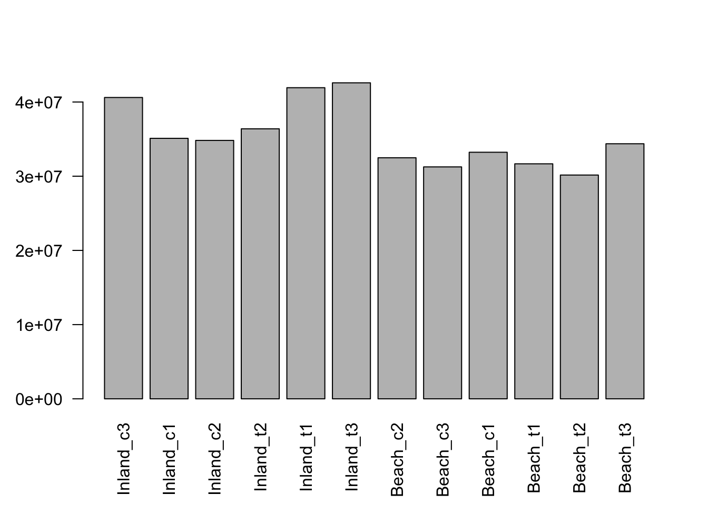
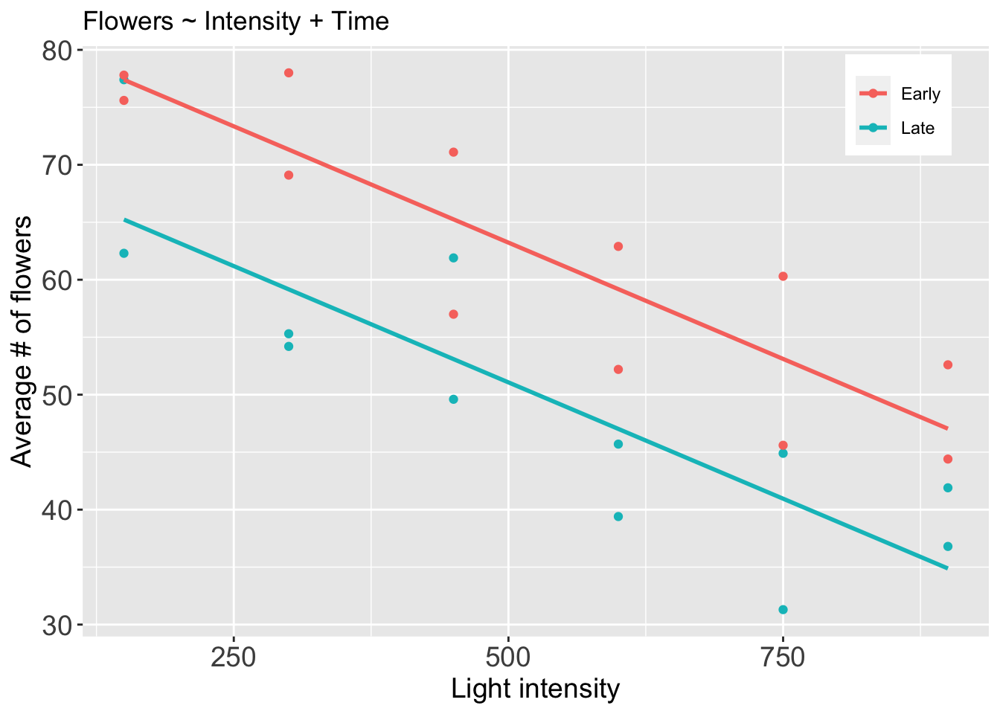

Data Preprocessing
0.1 Overview
- Reading in table of counts
- Filtering lowly expressed genes
- Quality control
- Normalization for composition bias
0.2 Experimental Design
Data for this workshop comes from a Nature Scientific Data paper by Zhang et al., 2018. The study examimes mechanisms of saline adaptation of a plant (Strophostyles helvola) related to the common bean (Phaseolus vulgaris). Briefly stated, the study reported the RNA-seq analyses of two genotypes (a salt tolerant beach genotype and a salt-sensitive inland genotype, see figure bellow) and provided sequence data for community use. Sequence data was deposited into the National Center for Biotechnology Information (NCBI) Sequence Read Archive (SRA) repository, and the abundance count for all the samples was deposited at Gene Expression Omnibus (GEO) database.

First, we load required packages:
library(edgeR) #Main package for DE analysis
library(tidyverse) #Data wrangling package, includes ggplot2, dplyr, tidy, readr
library(RColorBrewer) #Colour scheme for plotting
library(Glimma) #Interactive MD plots
library(gplots)For this workshop, the count data from the study will be obtained from the figshare repository, as shown bellow:
download.file(url = "https://ndownloader.figshare.com/files/23241812",
destfile = "gene_counts.txt")Import data into R:
raw_counts <- read.table(file="gene_counts.txt",
sep = "\t",
header = TRUE
)This is a data frame with the first 6 columns describing features (genes). Samples are from column number 7 (SRR).
head(raw_counts)Change sample names from the SRR to reflect sample information, such that: IT: inland treated; IC: inland control; BT: beach treated; BC: beach control
names(raw_counts)[7:18] <- c("IT2", "BC2", "IC3", "IT1", "BC3", "BT1", "BC1", "IT3", "IC1", "IC2", "BT2", "BT3")
raw_counts[1:6, 7:18]Reorder columns to group treatment samples together, by location
raw_counts <- raw_counts[ , c(1:6, 9,15,16,7,10,14,8,11,13,12,17,18)]
head(raw_counts[,7:18])Import the count data into the edgeR package. This will create a DGEList object for edgeR. The object has a number of slots for storing various parameters about the data.
dge <- DGEList(counts = raw_counts[ , 7:18],
lib.size = colSums(raw_counts[ , 7:18]),
norm.factors = rep(1,ncol(raw_counts[ , 7:18])),
samples = NULL,
group = NULL,
genes = raw_counts[ , 1:6])View the different data types contained in the DGEList object:
dge## An object of class "DGEList"
## $counts
## IC3 IC1 IC2 IT2 IT1 IT3 BC2 BC3 BC1 BT1 BT2 BT3
## 1 142 111 91 138 154 132 123 116 133 128 116 147
## 2 0 0 0 0 0 0 0 0 0 0 0 0
## 3 3742 3329 3433 3458 3979 4190 3530 3339 3597 2912 2652 3121
## 4 236 214 208 237 259 252 258 207 309 216 172 221
## 5 1650 1908 1701 1624 1955 2136 1351 1551 1639 902 621 730
## 27192 more rows ...
##
## $samples
## group lib.size norm.factors
## IC3 1 40619905 1
## IC1 1 35114368 1
## IC2 1 34833786 1
## IT2 1 36399307 1
## IT1 1 41939123 1
## 7 more rows ...
##
## $genes
## Geneid Chr Start End Strand Length
## 1 Phvul.001G000100.v1.0 Chr01 3852 11015 - 7164
## 2 Phvul.001G000200.v1.0 Chr01 99177 104451 - 5275
## 3 Phvul.001G000300.v1.0 Chr01 125452 132387 + 6936
## 4 Phvul.001G000400.v1.0 Chr01 134609 140566 - 5958
## 5 Phvul.001G000500.v1.0 Chr01 144309 146169 + 1861
## 27192 more rows ...Add sample and location information. Note that for a multivariate model, all combinations of treatments/group should be replicated in the second variable/factor. That is, we should have Control (C) and Treatment (T) samples, i.e group factor, in both inland and beach locations.
#group factor:
group<-as.factor(rep(c("C","T","C","T"), c(3,3,3,3)))
dge$samples$group<-group
group## [1] C C C T T T C C C T T T
## Levels: C T#location factor:
location<-as.factor(rep(c("inland","beach"),c(6,6)))
dge$samples$location<-location
location## [1] inland inland inland inland inland inland beach beach beach beach beach beach
## Levels: beach inlandNext, we verify that we have “C” and “T” in both inland and beach:
dge$samplesSave the DGEList object in order to maintain an original copy.
dge_orig<-dge
saveRDS(dge_orig, file = "dge_orig.rds")0.3 CPM transformation
We will transform raw read counts to expression counts: counts per million (CPM). While the majority of transformation methods work well, RPKM and FPKM normalization should be avoided in the context of differential expression analysis, no matter how often you see them applied in published studies. RPKM and FPKM are only needed if expression values need to be compared between different genes within the same sample for which the different gene lengths must be taken into consideration.
We use the cpm function for transforming raw counts.
#raw counts are converted to CPM and log-CPM values using the cpm function
cpm <- cpm(dge)
lcpm <- cpm(dge, log=TRUE)
L <- mean(dge$samples$lib.size) * 1e-6 #average library size in Millions
M <- median(dge$samples$lib.size) * 1e-6 #median lib size View the distribution of log-CPM, for inland control replicates:
#summary(lcpm)
summary(cpm)[,1:3]## IC3 IC1 IC2
## Min. : 0.000 Min. : 0.000 Min. : 0.000
## 1st Qu.: 0.517 1st Qu.: 0.513 1st Qu.: 0.517
## Median : 9.183 Median : 9.512 Median : 9.244
## Mean : 36.769 Mean : 36.769 Mean : 36.769
## 3rd Qu.: 35.894 3rd Qu.: 36.737 3rd Qu.: 35.598
## Max. :14527.705 Max. :16703.447 Max. :14496.4140.4 Gene filtering
Genes with very low counts across all libraries provide little evidence for differential expression and they interfere with some of the statistical approximations that are used later in the pipeline. They also add to the multiple testing burden when estimating false discovery rates, reducing power to detect DEGs. These genes should be filtered out prior to further analysis.
We remove genes that are lowly expressed using the filterByExpr edgeR function. By default, the function keeps genes with about 10 read counts or more in a minimum number of samples, where the number of samples is chosen according to the minimum group sample size. The actual filtering uses CPM values rather than counts in order to avoid giving preference to samples with large library sizes. For example, if the median library size is about 51 million and 10/51 ≈ 0.2, so the filterByExpr function keeps genes that have a CPM of 0.2 or more in at least three samples.
dim(dge) #retrieve dimentions of the dge object## [1] 27197 12keep.exprs <- filterByExpr(dge)
#Minimum read count can also be explicitly specified, for instance '5' bellow:
#keep.exprs <- filterByExpr(dge, min.count = 5, min.total.count = 5)
dge <- dge[keep.exprs,, keep.lib.sizes=FALSE]
dim(dge)## [1] 21181 12Let us plot line graphs depicting the effect of filtering out genes with low expression values:
lcpm.cutoff <- log2(10/M + 2/L)
nsamples <- ncol(dge)
col <- brewer.pal(nsamples, "Paired")
par(mfrow=c(1,2))
plot(density(lcpm[,1]), col=col[1], lwd=2, ylim=c(0,0.26), las=2, main="", xlab="") #density with lcpm from unfiltered data
title(main="A. Raw data", xlab="Log-cpm")
abline(v=lcpm.cutoff, lty=3)
for (i in 2:nsamples){
den <- density(lcpm[,i])
lines(den$x, den$y, col=col[i], lwd=2)
}
#legend("topright", samplenames, text.col=col, bty="n")
lcpm2 <- cpm(dge, log=TRUE) #NOTE: recalculating lcpm from filtered data!
plot(density(lcpm2[,1]), col=col[1], lwd=2, ylim=c(0,0.26), las=2, main="", xlab="")
title(main="B. Filtered data", xlab="Log-cpm")
abline(v=lcpm.cutoff, lty=3)
for (i in 2:nsamples){
den <- density(lcpm2[,i])
lines(den$x, den$y, col=col[i], lwd=2)
}#legend("topright", samplenames, text.col=col, bty="n")0.5 Normalization for sequencing depth differences
Normalization is a process designed to identify and remove systematic technical differences between samples that occur in the data to ensure that technical bias has minimal impact on the results.
Bar plots bellow show need for normalization to account for different library sizes.
par(mfrow=c(1,1))
samplenames<-c("Inland_c3","Inland_c1","Inland_c2","Inland_t2","Inland_t1","Inland_t3",
"Beach_c2","Beach_c3","Beach_c1","Beach_t1","Beach_t2","Beach_t3")
#Lib sizes:
barplot(dge$samples$lib.size, las = 2, names.arg = samplenames)
The overall strategy with normalization is to choose an appropriate baseline, and express sample counts relative to that baseline.
At lot of different normalization methods exist, but we will use TMM normalization in this tutorial.
Developed by Mark D Robinson and Oshlack, 2010, the trimmed mean of M-values normalization method (TMM) is performed to eliminate composition biases between libraries. This generates a set of normalization factors, where the product of these factors and the library sizes defines the effective library size. The calcNormFactors function in edgeR calculates the normalization factors between libraries.
Below, we first create a copy of raw data, followed by TMM normalization:
dge_unNorm<-dge
dge <- calcNormFactors(dge, method = "TMM")Note the change in normalization factors:
dge$samplesLet us plot the distribution of expression values showing the effect of normalization
par(mfrow=c(1,2)) #create two panels for plotting
lcpm <- cpm(dge_unNorm, log=TRUE)
boxplot(lcpm, las=2, col=col, main="")
title(main="Unnormalized data",ylab="Log-cpm")
lcpm <- cpm(dge, log=TRUE)
boxplot(lcpm, las=2, col=col, main="")
title(main="Normalized data",ylab="Log-cpm")0.6 Multidimensional scaling (MDS) plots
By far, one of the most important plots we make when we analyze RNA-Seq data are MDSplots. An MDSplot is a visualization of a principle components analysis, which determines the greatest sources of variation in the data. A principle components analysis is an example of an unsupervised analysis, where we don’t need to specify the groups. If your experiment is well controlled and has worked well, what we hope to see is that the greatest sources of variation in the data are the treatments/groups we are interested in. It is also an incredibly useful tool for quality control and checking for outliers. We can use the plotMDS function to create the MDS plot.
lcpm <- cpm(dge, log=TRUE)
#assign different colors to the group information
col.group <- dge$samples$group
levels(col.group) <- brewer.pal(nlevels(col.group), "Set1")## Warning in brewer.pal(nlevels(col.group), "Set1"): minimal value for n is 3, returning requested palette with 3 different levelscol.group <- as.character(col.group)
par(mfrow=c(1,1))
plotMDS(lcpm, col=col.group) 
Note from the plot above that all replicates per condition (treatment, location) cluster together.
Learning check!
- What is the greatest source of variation in the data (i.e. what does dimension 1 represent)?
- What is the second greatest source of variation in the data?
We observe from the figure above that greatest source of variation is the treatment effect (dimension 1). Also, and most importantly, note the separation due to location (dimension 2). This is suggestive that there might be need to account for location effect in the regression model. In other words, we can fit a model that determines the effect of treatment while adjusting for any differences in expression due to the effect of location. This is a type of multivariate or multi-factor analysis, and will be covered in session 2 of the worshop.
Next, we determine and plot out the proportion of explained variance for each Dimension observed in the MDSplot. We first transpose the data to have variables (genes) as columns:
data_for_PCA <- t(dge$counts)
dim(data_for_PCA)## [1] 12 21181We then calculate matrix of dissimilarities between samples using the dist function, then calculate the classical multidimensional scaling of the matrix data using the cmdsclale function:
# Below, "k" is the maximum dimension of the space which the data are to be represented in
mds <- cmdscale(dist(data_for_PCA), k=3, eig=TRUE)
# transform the Eigen values into percentage
eig_pc <- mds$eig * 100 / sum(mds$eig)
# barplot of the the percentage Eigen values
barplot(eig_pc,
las=1,
xlab="Dimension",
ylab="Proportion of explained variance (%)", y.axis=NULL,
col="darkgrey", names.arg = 1:12)
As expected, dimension 1 accounts for the majority of variance, i.e treatment effect seem to drive the majority of differential expression.